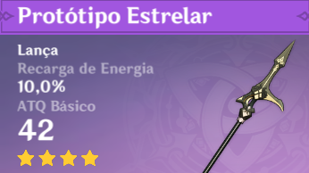

| Lanças |
Imagem |
Passiva |
Como obter |
| Báculo de Homa |
 |
Liberdade da Borboleta Vermelha Vida aumenta em 20%. Além disso, oferece um bônus
ATQ com base em 0.8% do Vida máximo do usuário. Quando o Vida do portador é inferior a 50%, esse
bônus ATQ é aumentado em um adicional 1% do Vida máximo.
|
Oração de evento limitado
|
| Lança de Favonius |
 |
Companhia do VentoOs Acertos Críticos possuem 60% de chance de gerar uma pequena
quantidade de Partícula Elemental, que irá regenerar 6 de Energia para o Personagem. Pode ocorrer
uma
vez a cada 12s.
|
Oração do mochileiro
|
| Protóipo estelar |
 |
Viciado em MagiaApós usar uma Habilidade Elemental, aumenta o Dano do Ataque Normal
e Ataque Carregado em 8% por 12s, podendo acumular até 2 vezes.
|
Arma feita no ferreiro
|
| Borla Preta |

|
Atacante PesadoAumenta o Dano contra os Slimes em 40%.
|
Oração do mochileiro
|